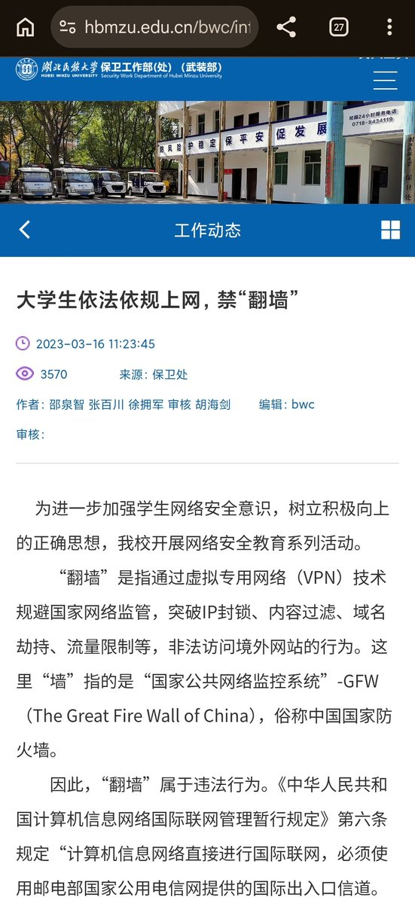
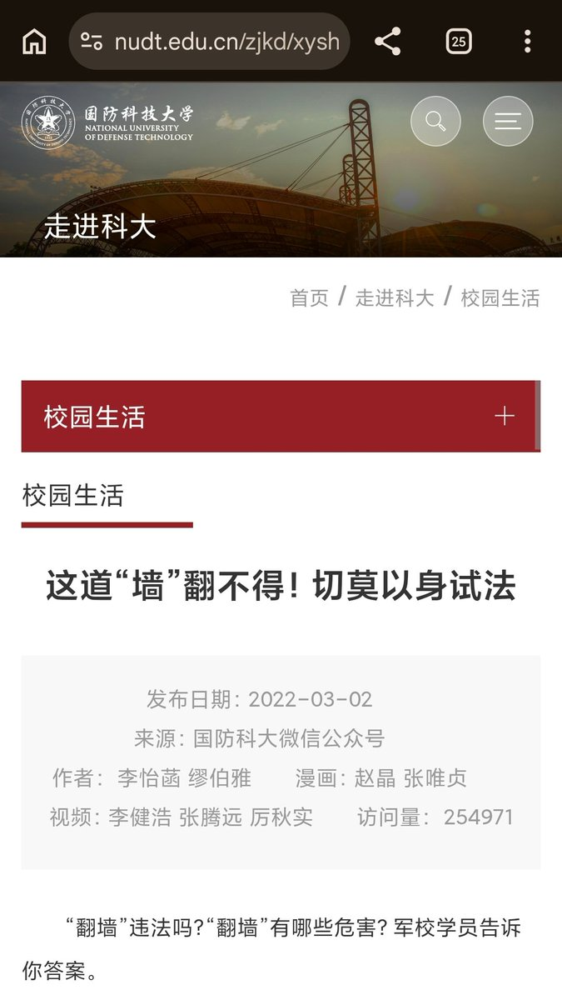
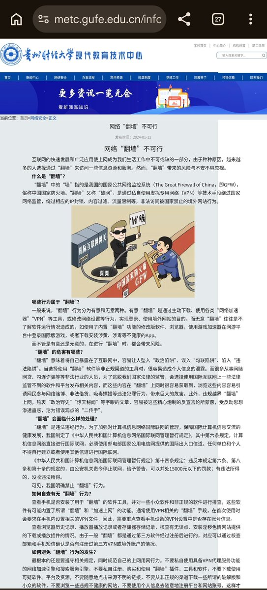
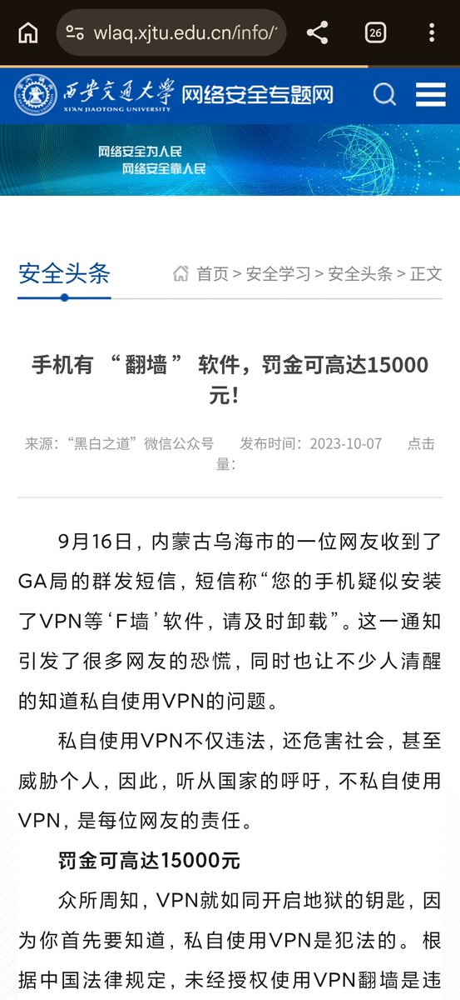
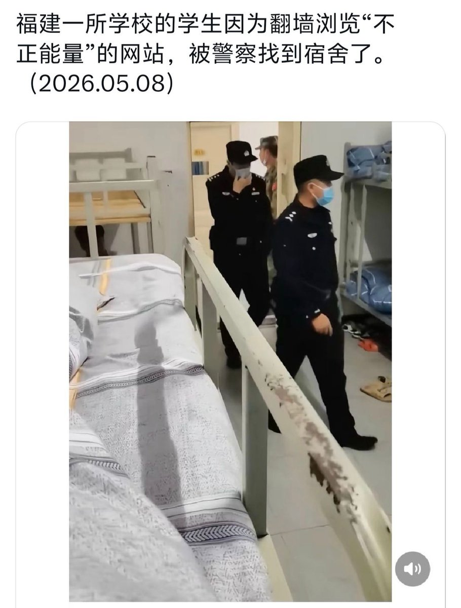

中国高校早在2023年就开始严管，如国防科大、西安交大等知名985/211高校也曾令其学生签「保证书」，以翻墙罚款15000元行政处罚等话术教育
按照这些公告的统一口径，“翻墙”是指通过虚拟专用网络（VPN）技术规避国家网络监管，突破IP封锁、内容过滤、域名劫持、流量限制等，非法访问境外网站的行为。这里“墙”指的是“国家公共网络监控系统”-GFW（The Great Fire Wall of China），俗称中国国家防火墙
包括这类校园网多数采用深信服产品，辅助校园网管理员对违规使用校园网翻墙的学生进行识别，更讽刺的是SSL VPN为深信服提供的EasyConnect还卸不干净
按照这些公告的统一口径，“翻墙”是指通过虚拟专用网络（VPN）技术规避国家网络监管，突破IP封锁、内容过滤、域名劫持、流量限制等，非法访问境外网站的行为。这里“墙”指的是“国家公共网络监控系统”-GFW（The Great Fire Wall of China），俗称中国国家防火墙
包括这类校园网多数采用深信服产品，辅助校园网管理员对违规使用校园网翻墙的学生进行识别，更讽刺的是SSL VPN为深信服提供的EasyConnect还卸不干净




